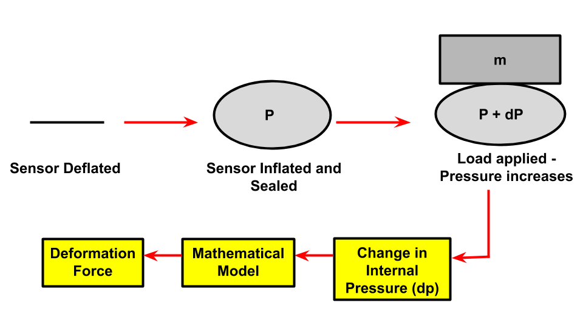
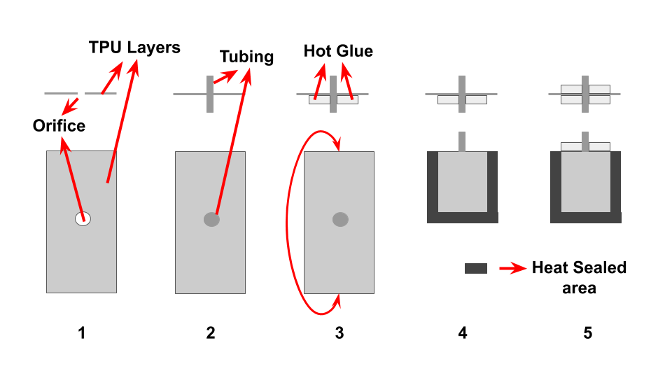
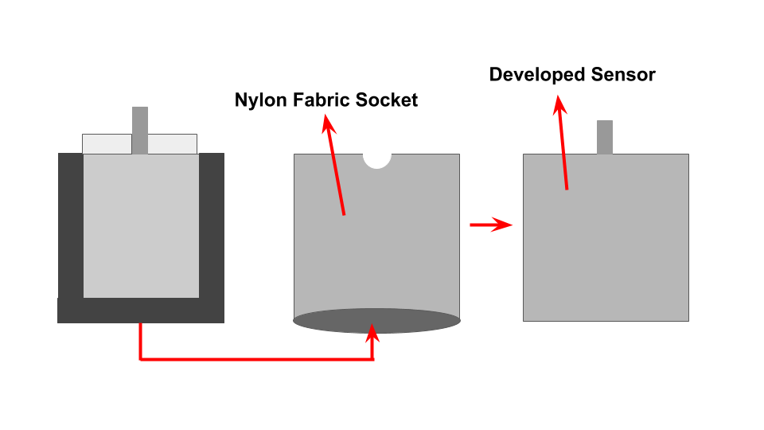
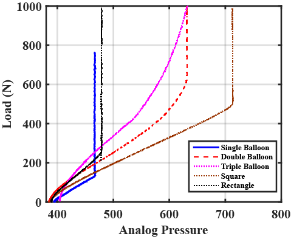
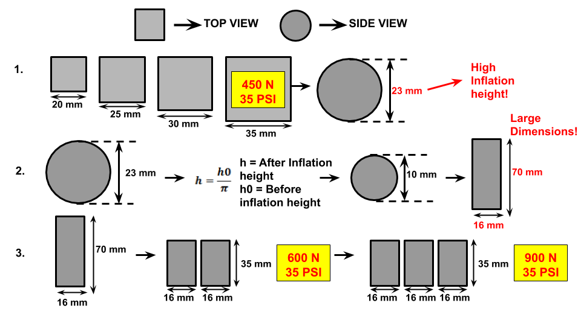
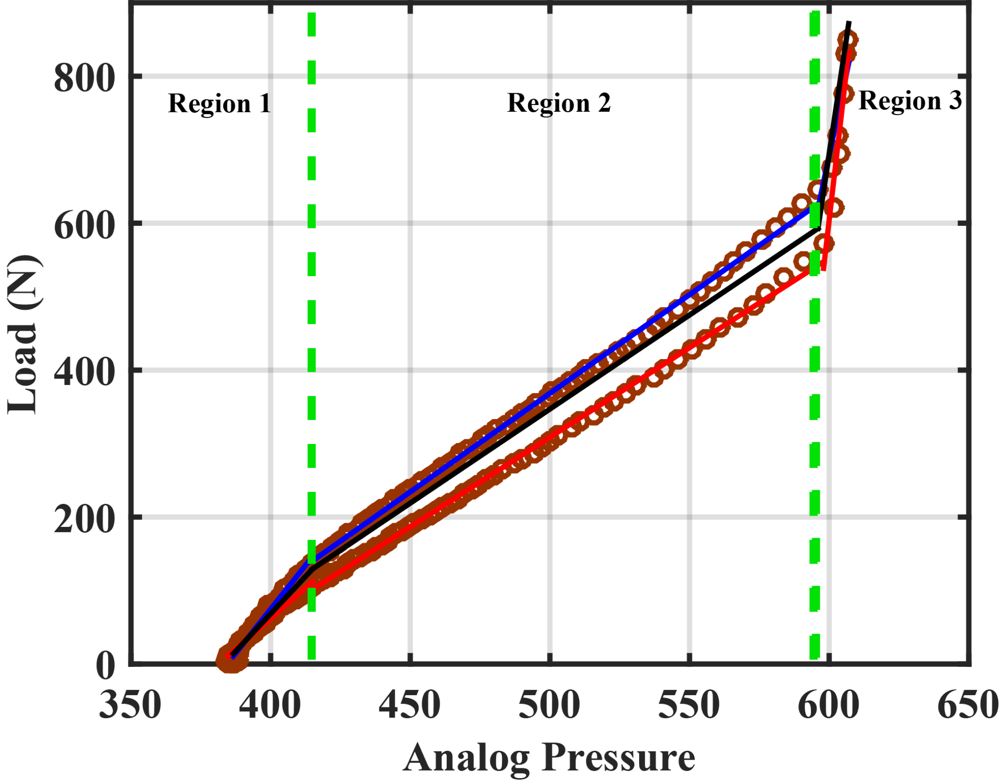
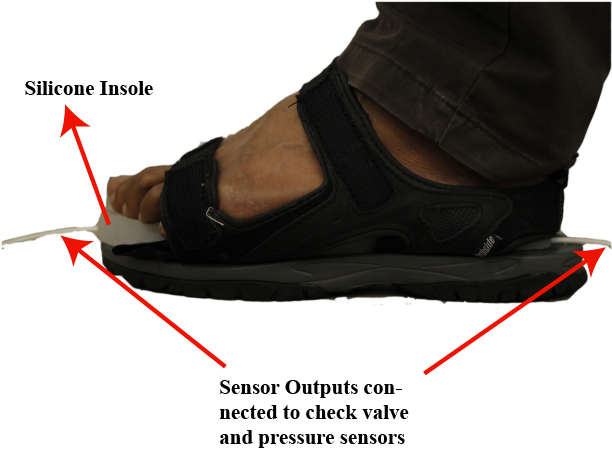

Arizona State University, USA · MS Thesis · Soft Sensors · Gait Detection
Fabric-Based Inflatable Insole Sensors for Gait Detection
Affiliation: Arizona State University, USA
This project developed soft inflatable fabric-based sensors embedded in a silicone insole for heel and toe load detection during gait.
Project overview
Wearable exosuits need reliable gait sensing to provide assistance at the correct phase of walking.
Many existing insole sensors can suffer from durability, signal fluctuation, cost, or fabrication limitations. This project developed a soft, fabric-based sensing approach using inflatable TPU chambers enclosed in Nylon fabric and embedded into a silicone insole for heel and toe sensing.
My contribution
- Designed and fabricated soft inflatable sensors using heat-sealed TPU chambers encased in Nylon fabric.
- Developed a leak-resistant fabrication method by placing tubing directly inside the TPU chamber and sealing it with hot glue, reducing dependence on rigid threaded connectors.
- Optimized the sensor geometry and selected a triple-balloon sensor design for insole integration.
- Characterized load-pressure behavior, hysteresis, repeatability, and model-based force estimation.
- Integrated heel and toe sensors into a silicone insole for proof-of-concept gait sensing.
Objectives
- Develop a soft, fabric-based pneumatic insole sensor.
- Select a sensor geometry suitable for heel and toe placement.
- Characterize force-deformation and pressure-load behavior.
- Evaluate repeatability and sensing range.
- Build calibration models for estimating load from pressure signal.
- Integrate sensors into a silicone insole for gait detection.
Results
- The triple-balloon sensor design was selected after comparing multiple geometries and cross-sections.
- The sensor showed a broad usable load range with piecewise response regions.
- Characterization supported calibration-based force estimation from pressure output.
- The final system integrated heel and toe sensors into a soft silicone insole as a proof of concept for gait detection.
Tools and methods
Technical focus
Selected figures

Working principle. The sensor is first inflated and sealed; when an external load is applied, internal pressure increases, enabling force estimation through a pressure-based model.

Fabrication process. TPU layers were prepared with an orifice, tubing was inserted, hot glue was used to improve sealing, and the final chamber was enclosed and heat sealed to create the soft sensor.

Sensor packaging. A Nylon fabric socket was developed to house the inflatable chamber and form the final sensor structure used in testing.

Geometry comparison. Multiple balloon shapes were compared, including single, double, triple, square, and rectangular designs, to identify a geometry with suitable load range and stability.

Design optimization. The sensor footprint and cross-sectional shape were adjusted to balance inflation height, size constraints, and load capacity for insole integration.

Selected triple-balloon design. The final design used multiple internal balloon sections connected through plastic connectors to improve sensing performance for foot loading.

Load-pressure characterization. Experimental data showed a piecewise response across three regions, which supported calibration and interpretation of the pressure signal under increasing load.

Insole integration. Heel and toe sensor outputs were connected to check valves and pressure sensors, and the soft sensing system was embedded into a silicone insole for gait monitoring.
These are your provided gait sensing figures added directly to the portfolio project page.